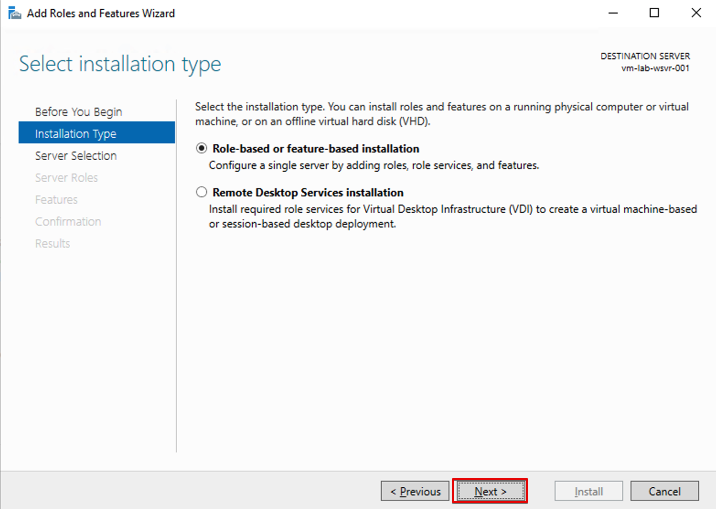

ex-2. IISの設定を行う
これでWindows Serverへ接続する事が出来ました．Webサーバーとして使用するために，IISをインストールしていきます．
Add roles and featuresをクリックします．

インストールウィザードが立ち上がるので，ここはNextで進みます．

ここも変更せずNextで進みます．

ここも変更せず，Nextで進みます．
Selectr server rolesまで来たらRoles内のWeb Server(IIS)をクリックします．
クリックするとダイアログが表示されますが，Add Featuresを選択してください．（以降も同じく）
以下のとおり，チェック済みとなればOKですのでNextで進みます．

Featuresは変更しないので，Nextで進みます．

Web Server Role(IIS)もNextで進みます．
Role servicesではManagement Serviceを選択しチェック済みとなったらNextで進みます．

Installをクリックします．
Installation successとなればインストール完了なのでCloseで閉じます．

Azure Portalに戻り，動作しているか確認します．
検索したいサービスを入力し，Virtual Machinesを選択します．

対象のVMを選択し，VMの概要ページへ移動します．

パプリックIPをクリップボードにコピーして，ブラウザの別タブに貼り付けます．

以下のように画面が表示されればOKです．
次は再度VMに接続し，サーバーホスティング用の.NET Coreをインストールしていきます．